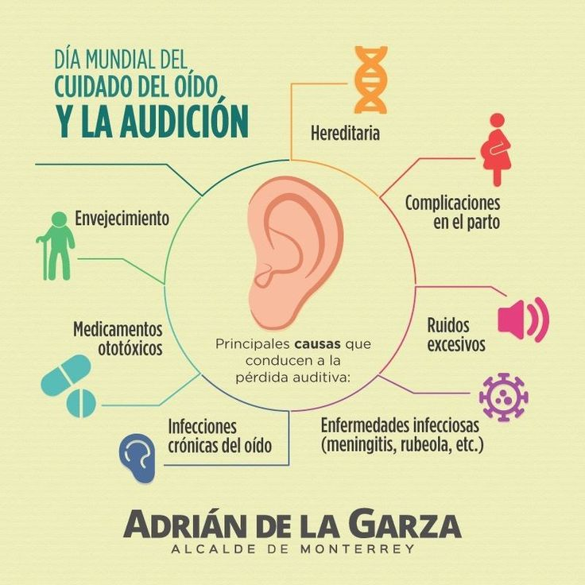

Explorando la importancia de la audición y los efectos de la contaminación auditiva.
Un dispositivo diseñado para medir niveles de sonido en el ambiente, clave para monitorear contaminación auditiva.
La audición es esencial para la comunicación y calidad de vida. Protegerla es fundamental.
La exposición a sonidos fuertes puede afectar la salud física y mental, siendo crucial medir y controlar los niveles sonoros.
En la ciudad de La Paz, el incremento de la actividad urbana, el tráfico constante y las frecuentes manifestaciones han intensificado la contaminación acústica, convirtiéndola en una amenaza para la salud pública.
Los altos niveles de ruido afectan especialmente a poblaciones vulnerables como adultos mayores, niños, bebés, personas con autismo y personas con hipersensibilidad auditiva, quienes son propensos a sufrir consecuencias serias como pérdida de audición, aumento del estrés, trastornos del sueño y riesgos cardiovasculares.
Ante este panorama, resulta crucial contar con herramientas que permitan monitorear, evaluar y gestionar los niveles de ruido en tiempo real, para mitigar sus efectos negativos y proteger a los ciudadanos, especialmente a los más vulnerables.